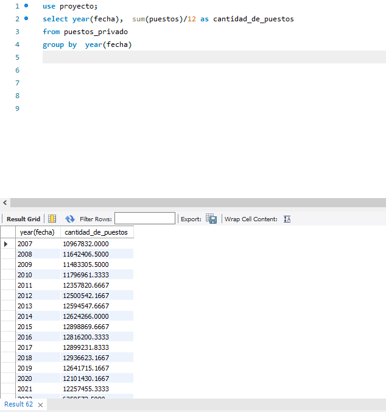

Las 5 provincias que más perdieron empleos
El grafico representa 4 provincias y la Capital Federal que se mide con datos apartes que los de Buenos Aires.
- Buenos Aires: Tuvo una pérdida de empleo del 6.04% al 2020 y una recuperación del 1.39% al 2021
- Capital Federal: Tuvo una pérdida de empleo del 7.26% al 2020 y sigue en caída con un 0.26% en el 2021
- Córdoba: Tuvo una pérdida de empleo del 6.43% al 2020 y una recuperación del 2.8% al 2021
- Santa Fe: Tuvo una pérdida de empleo del 5.95% y una recuperación de apenas un 0.74% al2021
- Mendoza: Tuvo una pérdida de empleo del 7.19% al 2020 y una recuperación de apenas el 0.2% al 2021

Principales industrias a nivel nacional
Las 4 principales industrias con mayor cantidad de empleabilidad y como fueron afectadas por la pandemia, tomado periodo desde 2018 a 2022
El comercio al por mayor tuvo una caída del 1.64% en 2019, teniendo una suba paulatina en 2020 y superando la cantidad de empleados a lo que se tenía en 2018 en unos 1.81%

En Transporte de energía terrestre y por tuberías empezó en caída en el 2018 y sigue en caída en el 2021 con un total de un 7.48%

En la elaboración de productos alimenticios se generó una caída del 1.05% en 2019 y una recuperación hasta 2021 superando la empleabilidad del 2018 en un 0.50%

El comercio al por menor empezó el 2018 con caída de la empleabilidad y se mantuvo hasta el 2022 teniendo una caída total del 7.48%
Fuente de datos: www.datos.gob.ar
Nombre del Dataset: Puestos de trabajo registrados por sector de actividad económica en el sector privado
Proceso de clasificación, limpieza, clasificación y visualización de los datos:
1) Los datos fueron extraídos directamente de la pagina oficial del gobierno de Argentina, Siendo así datos públicos. Se limpiaron los datos en Excel quitando duplicados, corregir errores estructurales, limpiar valores no deseados y revisar celdas vacías. Al ser datos publicados por el gobierno no se encontraron errores ni duplicados por lo cual se prosiguió a la clasificación en SQL para obtener los datos
2) Puestos de trabajos registrados en Argentina
3) Las 5 provincias que más perdieron empleas

4) Principales industrias a nivel nacional